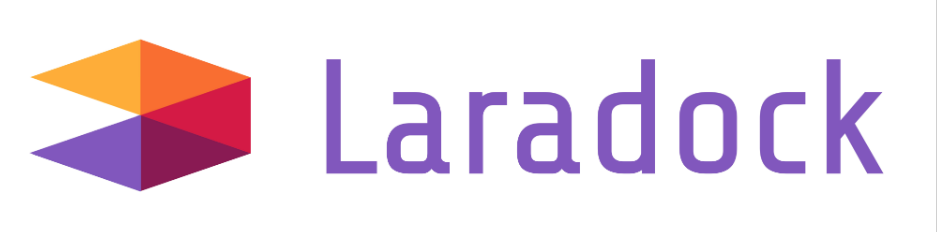
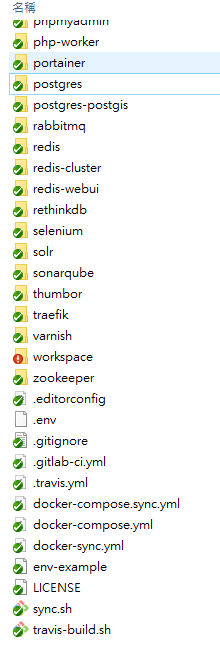
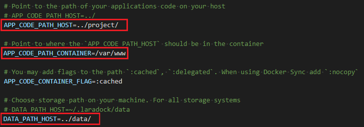
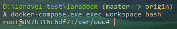
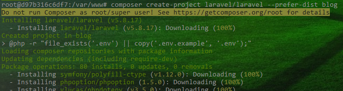
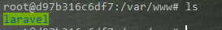
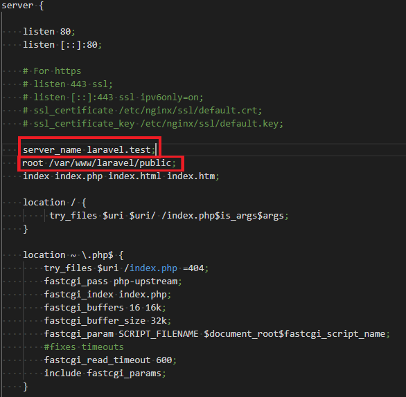
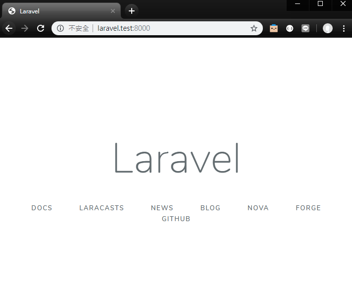

# Laravel + Docker 輕鬆上手

laravel 是 PHP 環境中很受歡迎的框架之一。然而其安裝時對環境要求嚴格，對於初入門來說門檻有點高。
在 Docker 問世之後，有人便將 Laravel 完整的 Docker 化了。今天要介紹的便是這樣一套方便好用的開發工具 — LaraDock。
Laradock 將 Laravel 開發環境完整 docker 化，我們僅需要 git clone 這個 repo 下來，設定好適合自己的環境變數，即可架設起 Laravel 專案。
# 建立 Laradock
首先我們使用以下指令將 laradock 的 repo clone 下來。
git clone https://github.com/Laradock/laradock.git Laradock
你會發現裡面滿滿的是各種 .yml 檔。這是因為 laradock 是使用「docker-compose」將不同的服務給串聯起來。因此，如果你電腦裡面沒有「docker-compose」，可以先到 這邊 安裝。
Laradock 是很完整的 PHP 解決方案，無論你是習慣使用 apache2 還是 nginx、喜歡 mysql 或是 postgresql，它都已經包羅近來了。甚至連 redis, rabbitMQ 這些常用的緩存技術，也都為你設想到了。

laradock 專案包含了所有常用 php 相關服務的 docker 設定，幾乎都為我們設想好了
它最初僅是專門為 Laravel Docker 化，然而時至今日，它已經能支援了絕大多數的 PHP 框架，我們僅需要設定好環境參數即可。
在 laradock 資料夾中找到 env-example 並且複製一份更名為 .env 。 這就是我們的環境設定檔。
cp env-example .env
接下來打開 .env 我們注意到以下幾個設定

其中：
- APP_CODE_PATH_HOST：設定你的 laravel 專案要存放的位置在哪裡。(我這邊的例子是放在跟 laradock 專案同一個層級的 project 資料夾中)
- APP_CODE_PATH_CONTAINER：設定你的專案要同步到「 container 內 」的哪個路徑，預設都是放在
/var/www下面。 - DATA_PATH_HOST：設定你的儲存資料 (ex. database, redis 內的數據) 要存放在哪。(我這邊的例子是放在跟 laradock 專案同層級的 data 資料夾中)
以上這些都設定完之後，我們就可以啟動 Laradock 了。
使用以下指令指定啟動包含「nginx」與「mysql」的 laradock。
docker-compose up -d nginx mysql
我們不用特別指定啟動「php-fpm」，因為 Laradock 會自己啟動包括 php-fpm 在內的 php-fpm 及 workspace 。
# 創建 Laravel 專案
在 laradock 啟動之後，會幫我們創建一個 workspace 。我們可以使用以下指令進入 workspace 的 docker 內。
docker-compose exec workspace bash
進入後，你應該會發現自己在 /var/www 中

此時的 /var/www 是連接外部 ../project 資料夾。
在這個環境中，已經裝好了 Laravel 所需的一切環境。因此我們可以直接使用以下指令創建我們的 Laravel 專案
composer create-project laravel/laravel --prefer-dist project_Name

待一段時間的安裝完成後，即可在 /var/www 中與 project 資料夾中看到我們的 Laravel 專案。

# 設定 NGINX
有了 Laravel 專案，我們接下來要設定 nginx ，使其能夠連到我們的 Laravel 中。
在 Laradock/nginx/sites 資料夾中，找到 laravel.conf.example 並且複製一份，隨自己喜好命名。此處我們命名為 laravel.test.conf
cd ~/Laradock/nginx/sites
cp laravel.conf.example laravel.test.conf
注意到紅框處，我們要將其設定為我們 Laravel 專案的路徑。
其中：
- server_name：代表你的網站的 domain，以本例子來說，我依照 laradock 的預設使用
laravel.test代表，之後我們希望使用http://laravel.test連到我們的網站。 - root：網站的進入點，我們設定在 laravel 專案中的 public。

# 設定 hosts
由於我們剛剛自訂了一個 laravel.test 的網址。我們要讓本機知道此網址其實就是 localhost 。因此我們必須在 /etc/hosts 中增加以下這行 (需要管理者權限)。
127.0.0.1 laravel.test
註：windows 的 hosts 放置於 C:\Windows\System32\drivers\etc\hosts
以上都完成後，我們重啟 laradock 將剛剛的設定全部套用。
docker-compose down
docker-compose up -d nginx mysql
開啟瀏覽器，應該就能看到 Laravel 專案的起始樣子囉！
p.s. 我的專案故意將 port 開在 8000，因此需要加上 port 號。

# 參考
- http://laradock.io/
- https://ithelp.ithome.com.tw/articles/10194127